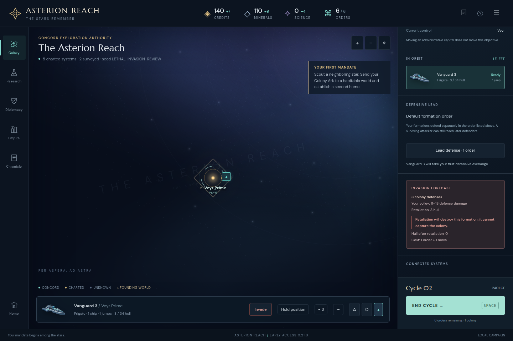
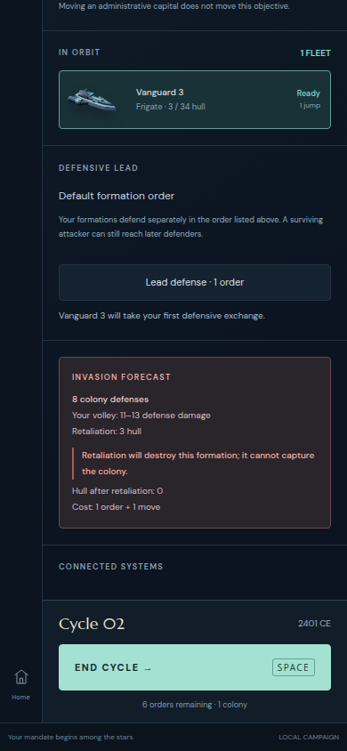

The forecast now states guaranteed loss of the attacking formation before a voluntary invasion. All nine focused browser cases passed on immutable production 5212, including desktop and 390-pixel presentation. No product issue was found.
Controlled synthetic fixtures, not additional played campaigns. Core commit 1912ab1e76c031f2d1c3504a79440923e98ff780 plus captured integration sources; production built at 2026-10-29T02:14:02.615Z. The compiled assets were fetched from the preview and matched its frozen files.
The original 3-hull Vanguard at an 8-defense colony now reads “Retaliation will destroy this formation; it cannot capture the colony,” followed by 0 projected hull. The 4.04-hull boundary correctly gives the same warning although displayed retaliation rounds to 4. The 4.06-hull case correctly survives at 0.1 hull and captures.
| Case | Projected hull | Ordinary outcome | Captured |
|---|---|---|---|
| original-lethal | 0 | repelled | False |
| rounded-lethal | 0 | repelled | False |
| surviving-bombardment | 28.4 | bombardment | False |
| possible-noncapture | 30 | bombardment | False |
| possible-capture | 30 | captured | True |
| guaranteed-capture | 30 | captured | True |
| shield-rounded-lethal | 0 | repelled | False |
| fractional-survivor | 0.1 | captured | True |
| narrow-original-lethal | 0 | repelled | False |
For every case, inspection preserved the full state; the UI attack equaled the ordinary command in every serialized field and report; the new engine equaled the baseline attack; and JSON restoration reproduced the same result. Voluntary attacks remained enabled, with no new confirmation. Both possible-capture outcomes were exercised.
Four additional checks verified hidden remote state invariance, frozen-input purity, removal of the preview when the own fleet leaves hostile orbit, and suppression when an orbital enemy prevents invasion. The source-graph comparison confirms every simulation dependency is unchanged except exposing the preexisting hullAfter local in the forecast return object.
At 1440 and 390 pixels, the warning and projected hull are readable and contained. The warning fits fully within the viewport after normal scrolling; neither the document nor the forecast overflows horizontally. There were no page errors. Screenshots were visually inspected.


Detailed results · Reviewed source and production hashes · Simulation graph comparison · Baseline source hashes · Corrected focused runner · Artifact manifest
The first attempt passed eight desktop cases, then timed out selecting a desktop-only switch hidden at 390 pixels. The corrected runner uses the visible fleet roster and completed all nine cases. This driver correction is preserved in the attempt record and the original runner. It did not require a product change.
The earlier failure of the wording is retained separately in prior-finding, with its original screenshot. Acceptance images and results above describe Stage 21 only. Funding UI, broader campaign balance and full-suite release acceptance are outside this review.